全体23日に伝えること
23日は、2つの「載せ方」を吉田様にお伝えします。どちらも「送る人」と「確かめて決める人」が分かれていて、御社が決めた物だけが外に出るのが共通の考え方です。
① SNS（Instagram）の投稿
名前：投稿の箱
- 吉田様が、写真とメモを箱に入れる
- ひなが堂が下書きを作る（3営業日以内）
- 吉田様が下書きを見て✓を押す
- ひなが堂が Instagram に公開
月4本まで。✓がない投稿は出しません。
② ホームページの「お店のチラシ」
名前：お店のチラシ欄
- お店が、専用のアドレスからチラシを送る
- 吉田様にメールが届く
- 吉田様が表で「載せる」を選ぶ
- 期間のあいだだけ自動で載って、自動で消える
ひなが堂の作業は入りません。料金内（社長様のご依頼）。
このページの画面は本物です。投稿の箱は公開中の画面を見本の設定で動かして撮りました（何も送られていません）。チラシは本番に入れる前の、同じ画面です。
SNS ①投稿の箱：吉田様がすること
御社
1アドレスを開いて「あいことば」を入れる
スマホでもパソコンでも開けます。ログインやパスワードは要りません。あいことばは23日にお渡しします（まだ吉田様に渡していません）。
23日の言い方「このアドレスを開いて、お渡しする『あいことば』を入れると、箱が開きます」
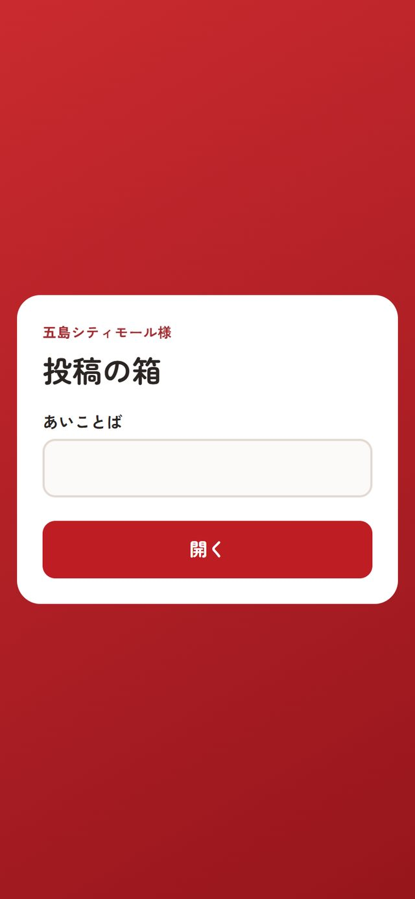
御社
2箱が開く。上のメーターで今月の残りが分かる
「11月は、あと3本入れられます（4本のうち）」のように出ます。上の2つのボタンで「箱に入れる」と「確認して✓」を切り替えます。黄色い数字は、確認を待っている下書きの数です。
23日の言い方「月4本までです。上の丸で、あと何本入れられるか分かります」
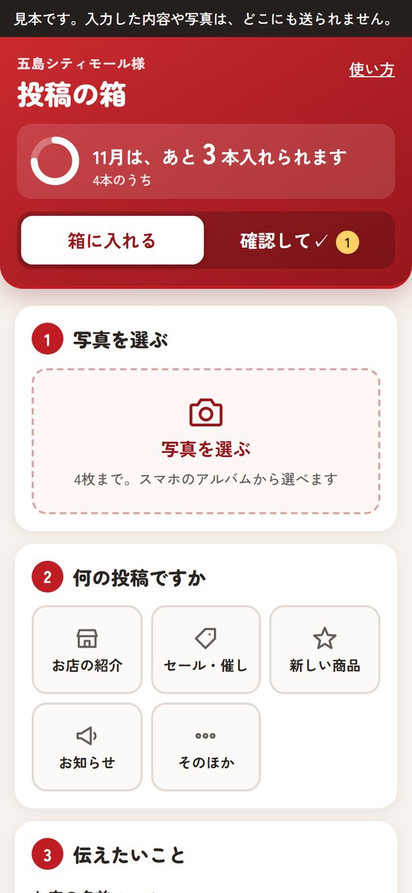
御社
3写真を選び、投稿の種類を押す
写真は4枚まで。スマホのアルバムから選べます（大きな写真は自動で小さくして送ります）。種類は「お店の紹介・セール・催し・新しい商品・お知らせ・そのほか」から1つ。
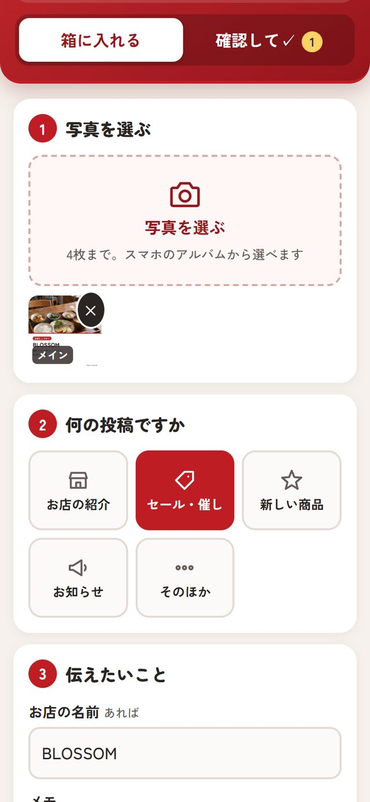
御社
4伝えたいことを、箇条書きでメモする。公開してほしい日を選ぶ
文章にしなくて大丈夫です。お店の名前があれば入れます。公開を希望する日は、今日から5営業日あと以降しか選べません（画面に、いつから選べるか出ます）。
23日の言い方「メモは箇条書きのままで大丈夫です。文章はこちらで整えます」
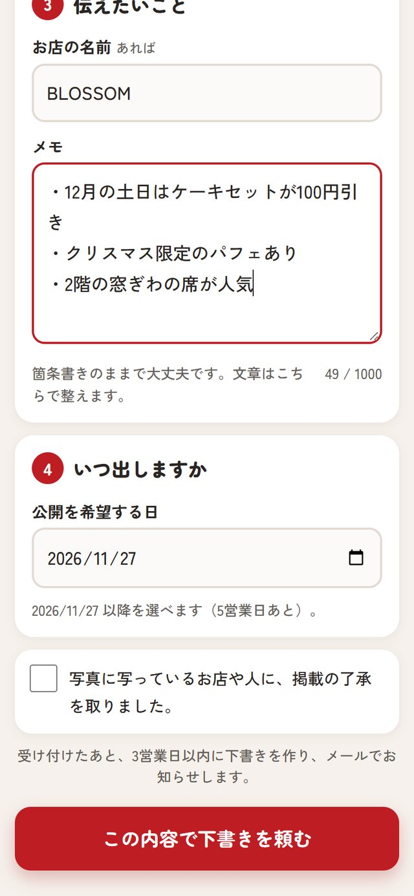
御社
5「写っている人の了承」に印を付けて、送る
写っているお店や人への了承は御社が取る決まり（契約書のとおり）なので、ここで確かめていただきます。印がないと送れません。
23日の言い方「写っているお店や人の了承だけ、御社でお願いします」
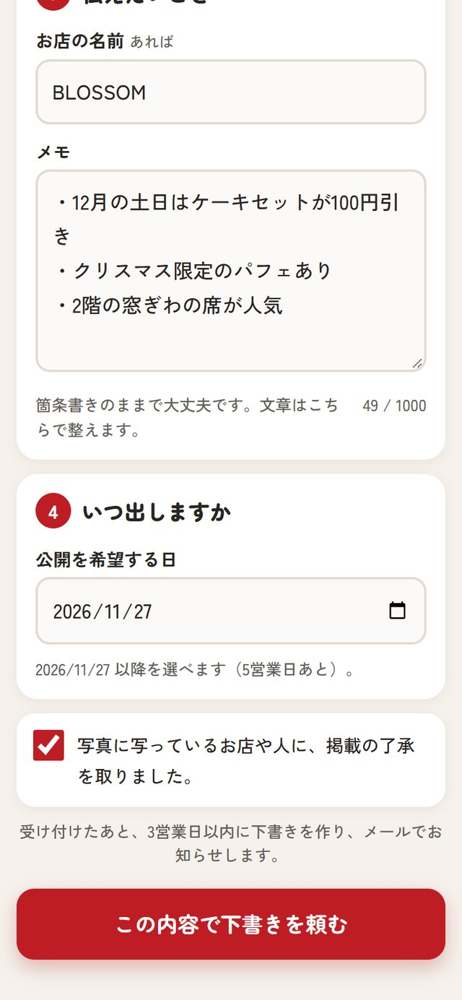
御社
6「受け付けました」と出たら終わり
受付番号が出ます。3営業日以内に下書きを作って、お知らせします。
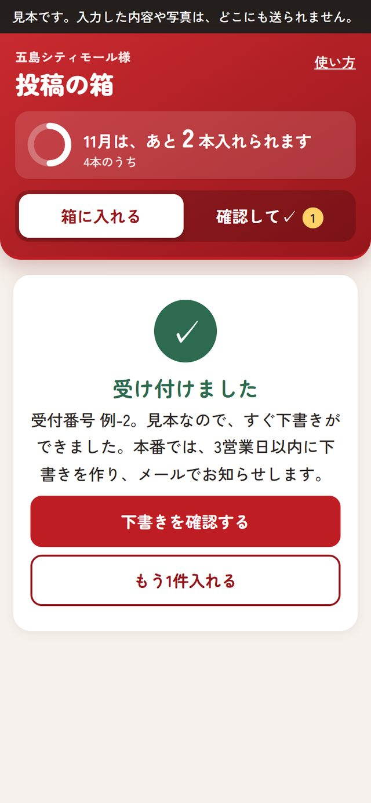
SNS ②投稿の箱：下書きを見て✓を押す
御社
1「確認して✓」を押すと、Instagram に近い形で下書きが見られる
写真と文章が、実際の投稿に近い見た目で出ます。「確認をお願いします」の赤い札が付いた物が、見ていただく物です。
23日の言い方「Instagram に出たときとほぼ同じ見た目で確かめられます」
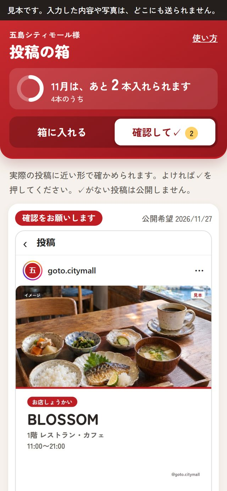
御社
2よければ「✓ この案で公開をお願いする」
押してもすぐには公開されません。公開希望日に合わせて、ひなが堂が公開します。押すと「よろしいですか？」と1回聞かれます。
23日の言い方「✓を押しても、すぐには出ません。希望の日に合わせて出します」
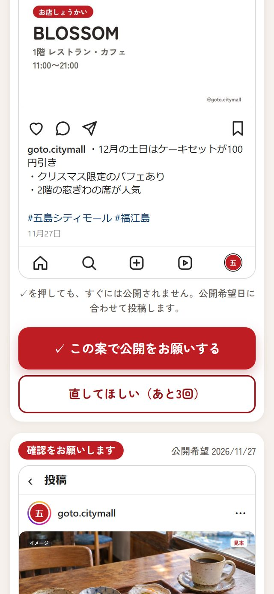
御社
3直したいときは「直してほしい（あと3回）」
直してほしい所を書いて「この内容で頼む」。1つの投稿につき3回まで作り直します。
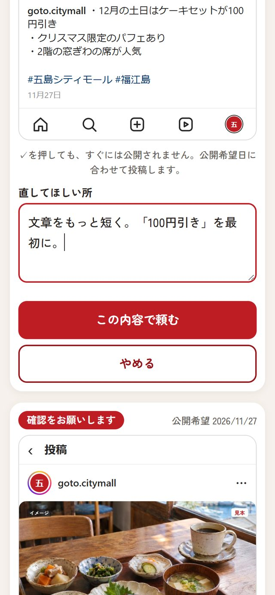
御社
4作り直した後は、前の案に戻ることもできる
「‹ 前の案に戻る」で前の案を見られます。戻すのは回数に入りません。切り替えただけでは決まらず、✓を押した案で決まります。
23日の言い方「前の方がよかったら、回数を使わずに戻せます」
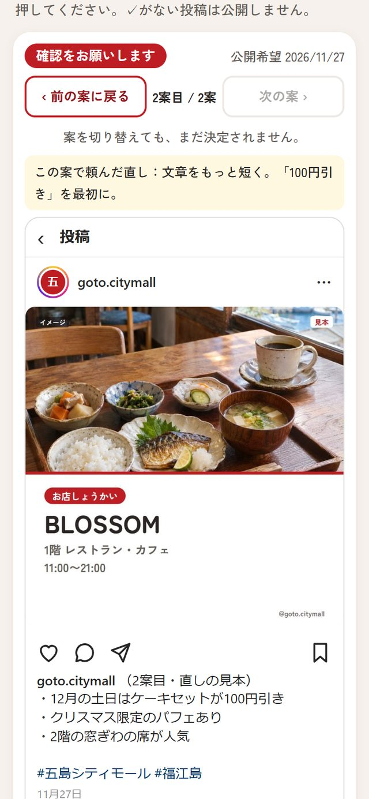
御社
5✓を押すと「確認済み」になる
緑の「✓ 確認済み」に変わります。メーターは、受け付けた時点で1本使ったことになります。
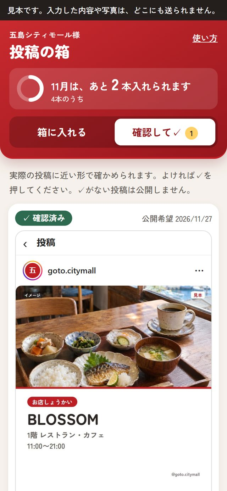
SNS ③投稿の箱：裏でひなが堂がすること
吉田様には見えない、大久保さん側の動きです。23日に聞かれたら答えられるように。
大久保
1「【投稿の箱】新しい受付」のメールが届く
ひなが堂のメールに、受付番号・種類・公開希望日・写真の枚数が届きます。
Claude
2下書きを作って、箱に入れる
Claude に「受付○○の下書きを作って」と言えば、写真を整え、文章を作って箱に入れます（受付から3営業日以内）。店名・日付・値段は、いただいたメモのとおりにします。
大久保
3吉田様に「下書きができました」と知らせる
今は自動で知らせません。LINE かメールで一言送ります（文面は Claude が用意します）。
大久保
4「承認されました」のメールが来たら、Instagram に公開する
Instagram への公開は、今は手作業です（自動にはつないでいません）。どのアカウントの権限で投稿するかは、23日に決めます（パスワードは受け取らない決まり）。
大久保
5「直しの依頼」のメールが来たら、Claude に作り直してもらう
直してほしい所がメールに書いてあります。作り直した案を入れたら、また吉田様へ一言。
チラシ ①お店のチラシ：お店がすること
お店
1吉田様からもらった「専用のアドレス」を開く
お店ごとに1つずつ違うアドレス（QRコードにもできます）。合言葉もログインも要りません。スマホのホーム画面に置いておけば、次からは押すだけです。
アドレスが違う・古いと、この画面だけが出ます（どのお店があるかも見えません）。
23日の言い方「お店ごとに専用のアドレスをお渡しします。これが鍵の代わりです」
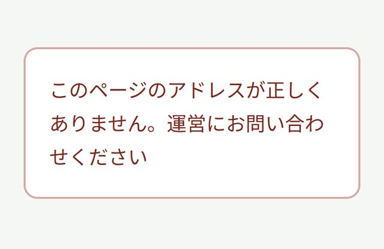
お店
2店名は最初から出ている。見出しを入れる
アドレスでお店が決まるので、店名は選びません（よそのお店を名乗れません）。見出しは1〜30字。
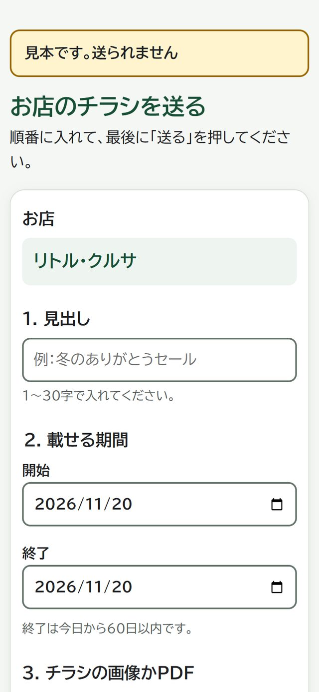
お店
3載せる期間を選ぶ
開始と終了の日。終了は今日から60日以内。終了の日まで載って、次の日に自動で消えます。
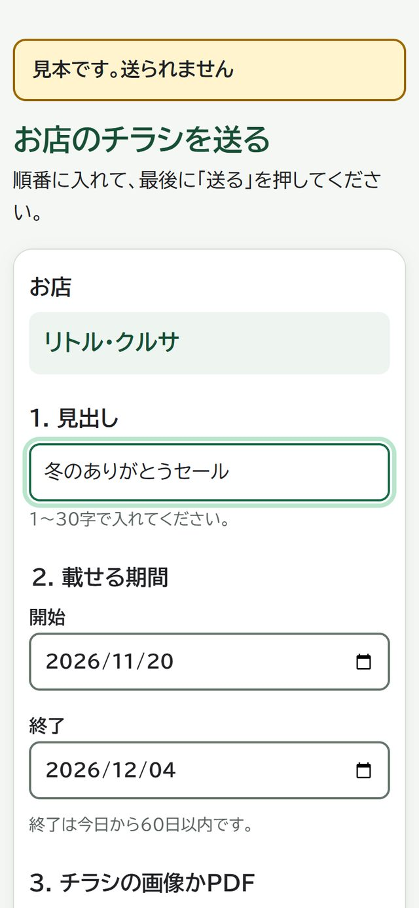
お店
4チラシの画像か PDF を選んで「送る」
JPEG・PNG・PDF、8MBまで。画像は送る前に整え直し、撮った場所などの情報は自動で消えます。選ぶと下に小さく見本が出ます。
23日の言い方「スマホのアルバムからチラシの写真を選んで、送るだけです」
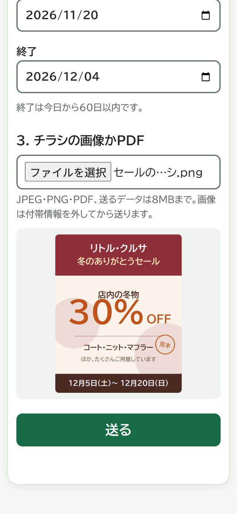
お店
5「受け付けました」で終わり
すぐには載りません。吉田様が確かめて「載せる」を選ぶと載ります。1店1日5件まで、同じ物を2回送ると断ります。
23日の言い方「送ったあと、御社が確かめてから載ります」
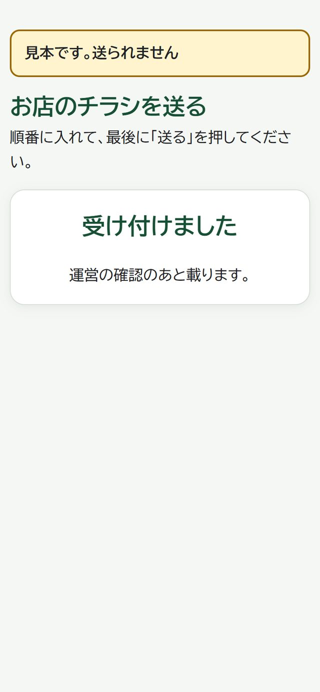
チラシ ②お店のチラシ：吉田様がすること
御社
1「（お店の名前）からチラシが届きました」のメールが届く
メールのリンクから表を開きます。メールが来ないこともまれにあるので、表の「チラシ」タブもときどき見ていただきます。
御社
2表の「チラシ」タブで、いちばん下の行を見る
表の見本（本番に入れた後、本物の画面に撮り直します）
受付日時 お店 見出し 載せ始め 載せ終わり ファイル（URL） 載せる 運営のメモ 11/20 10:12 リトル・クルサ 冬のありがとうセール 11/20 12/4 開く （空き）▾ ほかに「ファイルID」「種類」「容量」の列もあります。書き換えられるのは「載せ始め・載せ終わり・載せる・運営のメモ」の4つだけで、ほかの列は守られていて書き換えられません。行は消さず、出さないときは「載せない」。
御社
3「ファイル（URL）」を押して中身を確かめる
- お店と中身が合っている
- お客さまの顔・名前・車のナンバーが写っていない
- 値段・日付が正しい
- ほかの会社のキャラクターなどを勝手に使っていない
23日の言い方「載せる前の確認は、求人と同じく御社でお願いします」
御社
4「載せる」の列で「載せる」を選ぶ → ホームページに出る
載せ始めの日から、トップの「お店のチラシ」に並びます（スマホでは横に流して見る形）。ふつうは1分ほどで出ます（遅くても1時間以内）。
23日の言い方「『載せる』を選ぶだけで、ひなが堂を通さずに載ります」
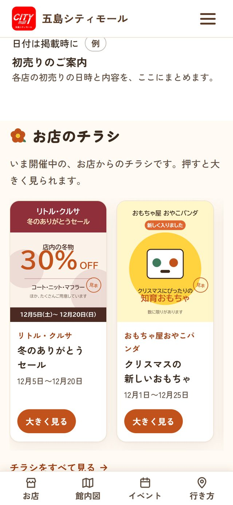
御社
5終わったら自動で消える。途中で止めるなら「載せない」
載せ終わりの次の日に、ホームページからも、外からファイルを見られる状態からも自動で外れます。「お知らせ・イベント」のページには、いま載っている物が全部並びます。
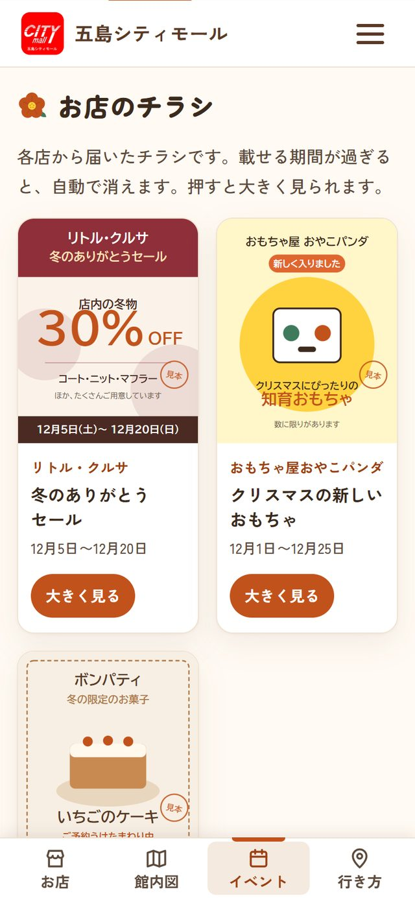
チラシ ③お店のチラシ：はじめの準備と裏側
ひなが堂
1御社の Google に仕組みを入れる
契約書のとおり御社の名義で入れます。はじめの1回だけ、御社のアカウントで「許可」を押していただく画面が出ます（その場で一緒に）。23日に、いつ・どなたのアカウントでするかを決めます。
ひなが堂
236店分の「専用のアドレス」を作る
表に「チラシの鍵（外に出さない）」というタブができ、お店ごとのアドレスが並びます。このタブは持ち主しか書き換えられません。
御社
3お店へ1店ずつ渡す
店長など責任者の方へ1店ずつ。みんなに一斉に送る・店頭に貼るのは避けていただきます。QRコードにして渡すこともできます（ひなが堂で作ります）。
23日の言い方「アドレスは、お店ごとの鍵です。ほかの人に回さないようにお伝えください」
御社
4漏れたかも・お店が替わったときは、作り直す
そのお店の「作り直す」に印を付けて、ひなが堂へ一言。新しいアドレスに替わり、古いアドレスはすぐ使えなくなります。
ひなが堂
5見張り
でたらめのアドレスで1時間に30回を超えて試されたら、自動でお知らせが来ます（止まりはしません）。
- 出口の鍵：御社が「載せる」を選んだ物だけが、期間のあいだだけ出る
- 入口の鍵：お店ごとの推測できない専用アドレス。漏れたらそのお店だけ作り直す
- 送られた物：載るまでは外から見られない。写真の撮影場所などは消す。偽物のファイルは断る
- 量の上限：1店1日5件・全体で1日50件
- 見張り：怪しい試しがあれば自動でお知らせ
料金：社長様のご依頼で、今回のご契約の料金内（追加なし）。毎月の更新4回には数えません。ご案内の文書（4枚）を別にお渡しし、社長様から「合意します」のメールをいただきます。
聞かれたらよく聞かれそうなこと
- Q. パスワードを渡さないといけませんか？
- いいえ。Instagram も Google も、御社のパスワードは受け取りません。「管理の権限」をいただく形です。御社のアカウントには2段階認証をお願いしています。
- Q. ✓や「載せる」を押さなかったら？
- 外には出ません。投稿の箱は、公開希望日が近づいたら一言お声がけします。チラシは、選ばれないまま期間が過ぎれば、そのまま終わりです。
- Q. 間違って載せてしまったら？
- チラシは表で「載せない」に変えれば、ホームページからも外から見られる状態からも外れます。Instagram に出た投稿は、ひなが堂へご連絡いただければ消します。
- Q. お店が勝手に載せることはできますか？
- できません。チラシは御社が「載せる」を選んだ物だけ、投稿は御社が✓を押した物だけが出ます。
- Q. アドレス（鍵）が漏れたら？
- そのお店の分だけ作り直します。古いアドレスはすぐ使えなくなります。ほかのお店には影響しません。
- Q. チラシは何枚まで？PDFでもいい？
- 1店1日5件まで、1回に1ファイル（8MBまで）。JPEG・PNG・PDF。画像がいちばんきれいに出ます。PDF はホームページでは1ページ目が小さく出て、押すと全部見られます。
- Q. 写真の撮影場所が漏れませんか？
- チラシの画像は、送る前と仕組みの中の2か所で、撮影場所などの情報を消します（PDF の中の作成者名などは消せないので、気になる方は画像で）。投稿の箱の写真は、ひなが堂で整えてから使います。
- Q. 追加の費用はかかりますか？
- かかりません。チラシ欄は社長様のご依頼で今回の料金内、投稿の箱は月1万円の中（月4本まで）です。
- Q. Instagram への投稿は自動ですか？
- 今は、✓のあとにひなが堂が手で公開します。自動でつなぐかは、御社のアカウントの権限を確かめてから相談します。
- Q. テナントが投稿の箱を直接使えますか？
- 最初は、御社のご担当者に集める形をおすすめします。順番や内容をそろえやすいためです。チラシは各店が直接送れます。
おわり。分からない所は Claude に聞いてください。